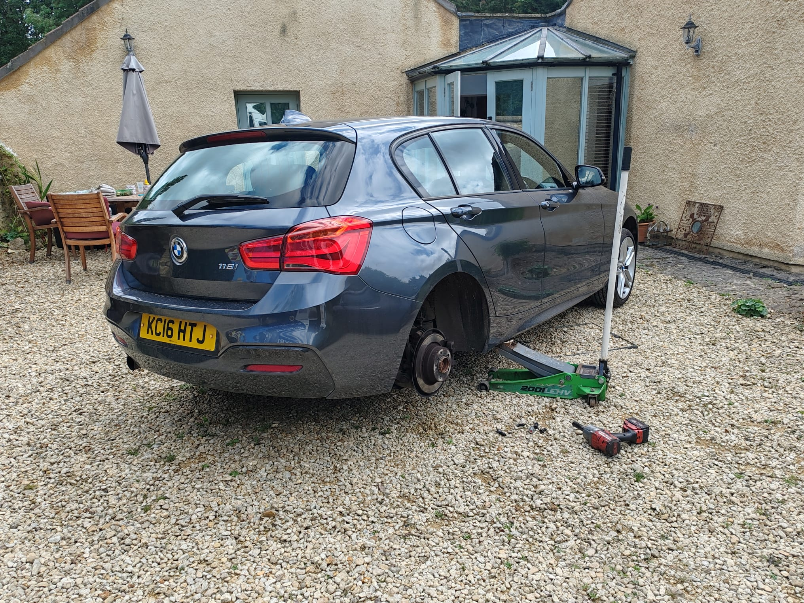
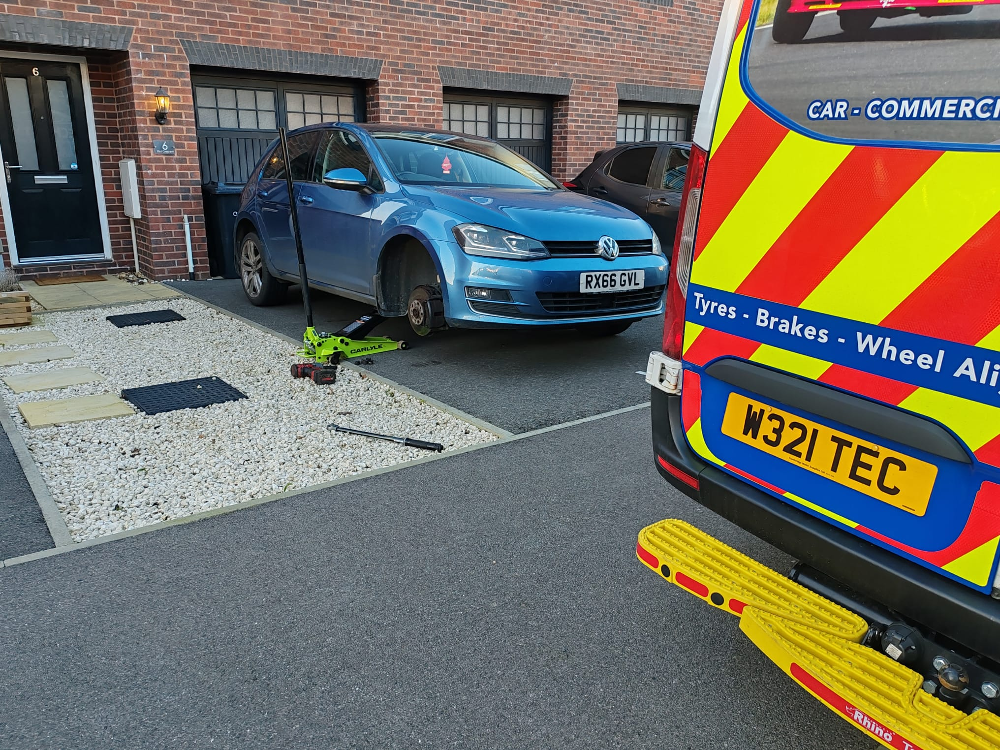
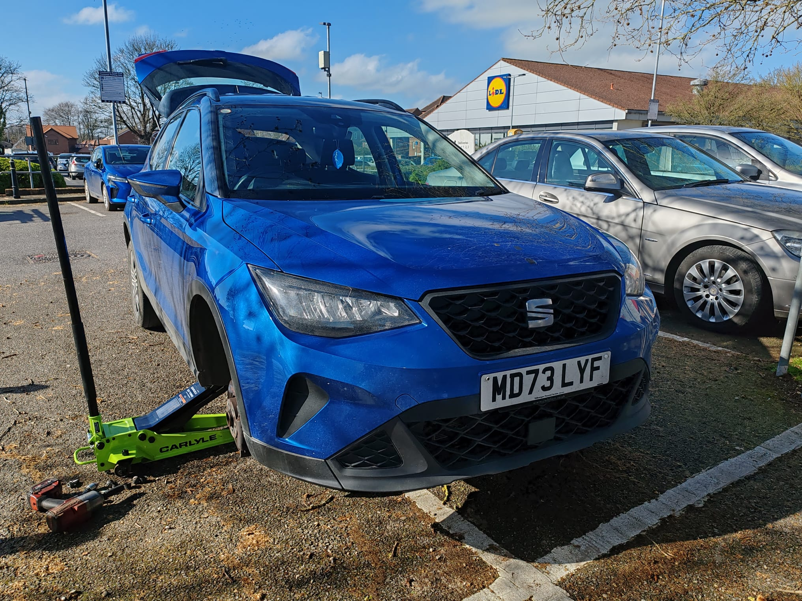
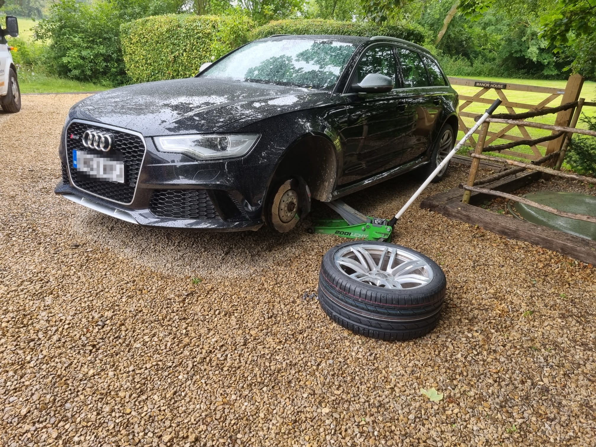

Professional tyre supply and fitting at your home, workplace or roadside across Melksham, Trowbridge, Chippenham and all of Wiltshire. No garage visit needed.

Tech & Tyres provides professional mobile tyre fitting in Melksham and across Wiltshire — bringing everything to you. Whether you're at home, in a work car park, or stranded at the roadside, our fully-equipped mobile unit arrives promptly and gets the job done fast.
We stock a wide range of tyres from leading brands to budget options, so you get the right tyre for your car and budget without setting foot in a garage.
We arrive with the correct tyres in stock. No second trips, no delays.
Every fitted tyre is properly balanced for a smooth, safe drive.
New valves fitted as standard — no extra charge.
All four tyres checked and inflated to the correct pressure before we leave.
We take your old tyres away — no mess left behind.




A nationally recognised quality standard — you're in trusted hands.
Thousands of verified reviews from real customers across Wiltshire.
You'll know the price before we arrive. No surprises.
Often same-day. Certainly faster than booking a traditional garage appointment.
.png)